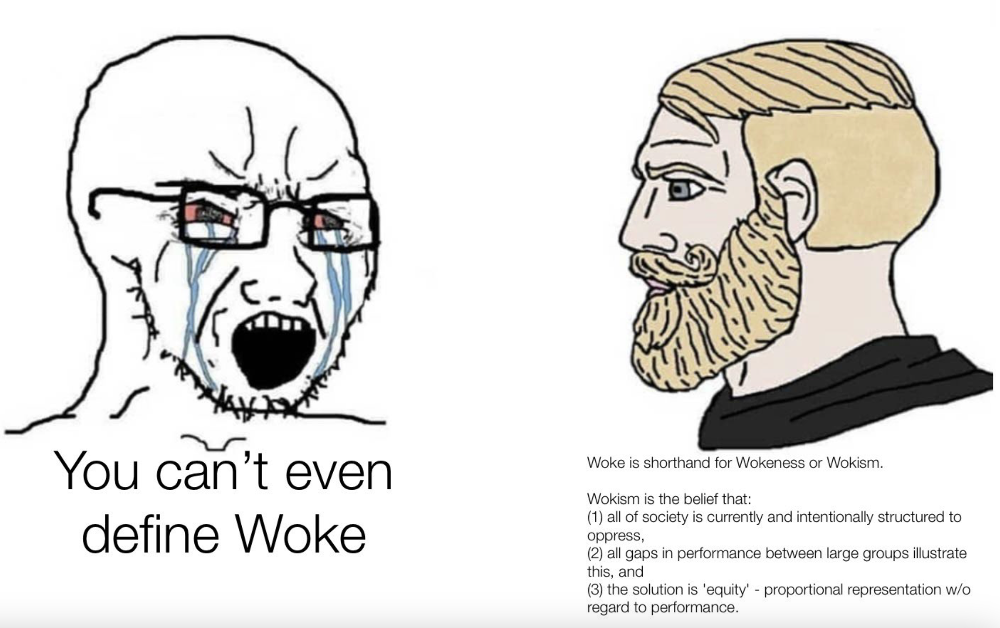

1. Go Woke, Go Broke... Really?
2. Go Woke, Really? What the Data Say...
3. Go Broke, Really? What the Data Say...
4. Conclusion
What can we conclude?
The dataset used to investigate the diversity across movies is not perfect for the following reasons:
First of all, the dataset stopped in 2014, at the very beginning of the increase of diversity in the media (2010), before #MeToo (2017), and way before the sentences ‘Go Woke, Go Broke’ was invented (2023).
Secondly, the dataset does not contain all the roles presented in the movies nor all the characters and extras, thus we cannot investigate the demography of the secondary roles.
Thirdly, diversity is not limited to gender, ethnicity, height and age, but can embarrass many other things like sexual orientation and religion among other things, which are not present in our dataset.
Fourthly, often the nationality was entered in the dataset instead of the ethnicity, thus creating a bias toward the country that has clarified the ethnicities of their actors. For instance, in the USA, we can find the categories ‘Native American’, ‘European American’, ‘African American’, ‘Asian American’, ‘Arab American’, etc, whereas in France (which is a country known for its diversity), where present only the category ‘French’.
Last but not least, we think that it is rather the quality of the movies instead of the diversity it contains that impact the box office revenue. In the dataset, there were no means to assess how good each movie is, it could be interesting to redo the data analysis according to the rating of each movie, for instance.
To be eligible for Best Picture Consideration, each movie should meet at least 2 out of 4 of the diversity criteria, one of them:
Even though these inclusion criteria were created for a GOOD PURPOSE, sometimes it feels that secondary characters are created only for the movie to fit them, thus leading to not-well-written characters filled with stereotypical behavior. Those characters might defeat the purpose of diversity inclusion, as they are perpetuating clichés, leading to the essentialization of marginalized groups.
Our analysis reveals that diversity in movies has significantly increased over time, both in terms of producing countries and within-country representation. Since the 1940s, there has been a marked rise in gender, ethnicity, age, and height diversity within casts. However, this trend is less pronounced when considering the proportion of foreign actors in each country’s productions. This discrepancy has sparked intriguing online debates, including the popular notion that "woke movies bring less money."
Contrary to this belief, our analysis provides substantial evidence that diversity, particularly in terms of a varied and balanced cast, is associated with higher movie revenues. This suggests that diversity, when thoughtfully incorporated, enhances a movie's appeal and commercial success.
However, it is essential to distinguish between genuine diversity, with multidimensional characters, and what some describe as "tokenized" diversity — representation, with 1-dimensional characters being essentialized, included solely to meet quotas without consideration for narrative coherence.
While this study did not explore this more recent phenomenon, it remains a topic of heated discussion and a key element of the "get woke, go broke" debate. Future projects could delve deeper into how different forms of diversity impact financial outcomes.
Overall, our findings highlight the positive role that diversity is growing and that it can play in the film industry, emphasizing its value as a contributor to both cultural representation and economic success.
